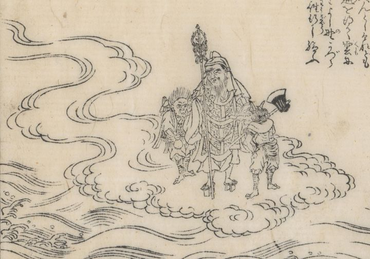

神通を得て、鬼神とともに雲に昇り、吉野葛城へ向かっている役行者。頭巾を被り、錫杖を持ち、高下駄を履いている。
著作者：秋里翁・西村中和／出典：親書誌：U426_nichibunken_0446：本朝年代記圖會／日付：2017／資源識別子：U426_nichibunken_0446_0014_0000
Copyright (c)2010- International Research Center for Japanese Studies, Kyoto, Japan. All rights reserved.